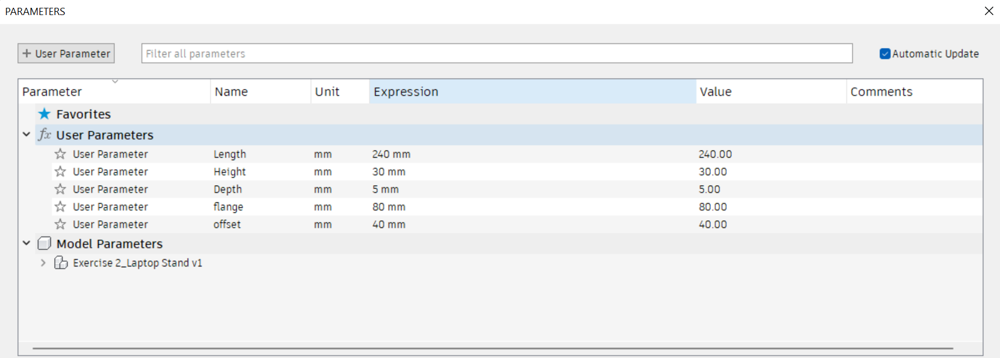

Computer Controlled Cutting
For this week, we did Computer Controlled Cutting also known as CNC (Computer Numerical Control). Provides accurate and precise cutting operations.
CNC (Computer Numerical Control):
Data is provided from:
- CADD operation
- Digital 2D drawings
Used in:
- Laser cutting & engraving
- Flatbed cutters & 2D routers
- Milling machine
2D Profile:
All cutting systems work on a 2D profile which provides an outline of the cut
Advantages:
- Cut is precise with little wastage of material
- Allows positioning to prevent wastage
- Repeatability
Vector file formats:
- DXF (Data eXchange Format)
- PDF (Portable Document Format)
- SVG (Scalable Vector Graphics)
Software Tools
Fusion 360:
- Full CAD/CAM software to obtain profiles
- Lots of modelling tools to help
Vector Drawing software:
- Inkscape
- LibreCAD (for DXF files)
- CorelDraw (licensed software)
- Illustrator (licensed software)
Output Vector Formats
- DXF (outdated, but still used, text editable)
- PDF, EPS
- SVG (may have different variants)
- AI (Adobe illustrator format)
Exercise 1: Keychain for cutting
We were task to create a keychain with our names and any logo we wanted, for preparation for next week lesson.
Is similar to the one we did for previous exercise the only difference is that we need to prevent the island from falling when the machine is cutting. To prevent that from happening is to create a causeways as shown in the picture below.

Exercise 2: Laptop Stand
We were task to create a laptop stand using parameters and combine functions
Before doing anything, we have to set the desire parameters
The parameters for the legs is as shown
We have to make the slot that will be attach from the both legs to the body by using the combine function
Same goes for the front support and back support
The final look should be like this
Assignment
For our assignment we were task to create a make-up box that doesn't require gluing and to laser cut during the next lesson which is after the term break.